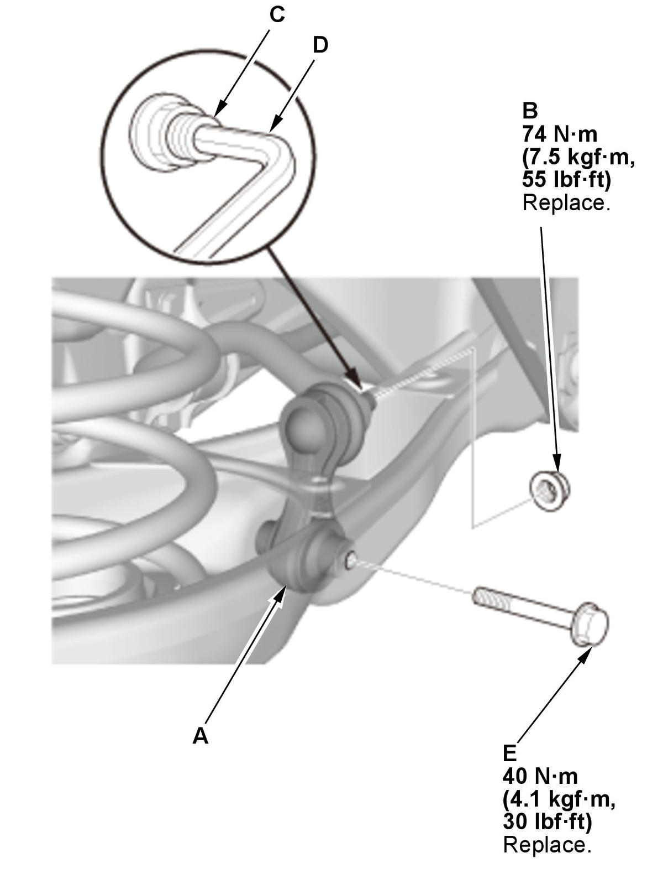

Rear Stabilizer Link Removal and Installation: Installation
- Stabilizer Link - Install

Courtesy of HONDA, U.S.A., INC.1. Install the stabilizer link (A). 2. Install the new flange nut (B), and tighten it to the specified torque while holding the respective joint pin (C) with a hex wrench (D).
3. Install the stabilizer link lower mounting bolt (E).
NOTE: Loosely install the nuts and/or bolts to install the bushings, load the suspension with the vehicle's weight, and then tighten the nuts and/or bolts to the specified torque.
- Rear Wheel - Install